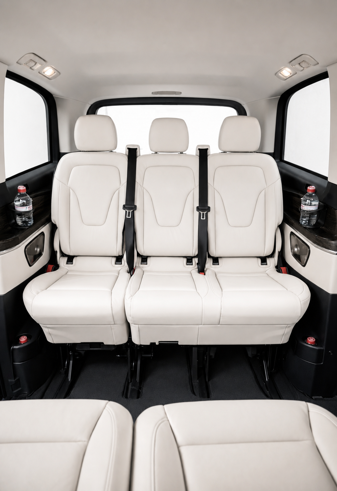

Un séminaire de direction de trois jours dans un domaine de Provence avec 25 participants. Programme : arrivées depuis Paris, Lyon et Bordeaux le lundi, visites de sites partenaires le mardi, activités de cohésion en extérieur le mercredi, retours vers différents aéroports le jeudi. À ce programme, s'ajoutent des véhicules pour les déplacements vers les restaurants chaque soir, un transfert spécial pour le PDG qui repart un jour plus tôt en jet privé, et deux participants qui ont des réunions sur Marseille le mardi matin avant de rejoindre le groupe.
Ce scénario — parfaitement représentatif d'un séminaire de direction contemporain — illustre le niveau de complexité logistique que doit gérer un travel manager qui organise un voyage d'affaires de groupe en France. La tentation naturelle est de découper ce programme en plusieurs micro-prestataires : un prestataire local pour les transferts Provence, un autre pour les déplacements individuels depuis Paris, un troisième pour les activités. Le résultat est une multiplication des contacts, une fragmentation de la responsabilité, et une charge de coordination qui retombe entièrement sur le travel manager — souvent en temps réel, le jour même.
Ce guide s'adresse aux travel managers et aux agences voyage d'affaires qui ont compris qu'il existe une meilleure approche. Un seul interlocuteur, une seule responsabilité, pour toute la mobilité du groupe.
- Vous gérez la mobilité de groupes de 15 à 100 personnes en voyage d'affaires
- Vous avez plusieurs prestataires locaux à coordonner sur un même programme
- Vous cherchez une facturation consolidée compatible avec les processus achats corporate
- Vous voulez un seul interlocuteur joignable 24h/24 en cas d'imprévu pendant le voyage
Le casse-tête logistique du travel manager pour un groupe de 20+ personnes
Organiser la mobilité d'un groupe de 20 à 50 personnes en voyage d'affaires en France est une opération qui mobilise une quantité de micro-décisions considérable. Et contrairement à ce que laissent croire les outils de booking corporate qui promettent de "simplifier" les réservations groupe, la complexité ne disparaît pas avec un meilleur outil — elle se déplace simplement.
Le premier problème est celui des arrivées et départs décalés. Dans un groupe de direction, il est rare que tout le monde parte du même endroit et arrive à la même heure. Certains sont à Paris, d'autres à Lyon, certains arrivent en TGV, d'autres en avion, le PDG arrive peut-être en jet privé depuis l'étranger. Coordonner ces arrivées décalées sans que chaque participant attende ou se sente "perdu" dans la logistique demande une orchestration permanente.
Le deuxième problème est celui des changements de dernière minute. Dans un environnement corporate, les agendas changent. Un participant annule la veille, un autre ajoute un rendez-vous et a besoin d'une prise en charge spéciale le matin, le programme d'une journée est décalé d'une heure à cause d'une réunion qui a débordé. Chaque changement déclenche une cascade de modifications sur la logistique mobilité — modifications que le travel manager doit gérer en temps réel, souvent en parallèle d'autres responsabilités.
Le troisième problème est celui de la cohérence du niveau de service. Un groupe de directeurs généraux et de membres du comité exécutif a des attentes de service élevées. Si le transfert aéroport est irréprochable mais que le véhicule du dîner arrive en retard le deuxième soir, l'impression globale est dégradée. Maintenir la cohérence du niveau de service sur l'ensemble d'un programme de 3 jours avec plusieurs prestataires différents est quasiment impossible sans un coordinateur global.
Le quatrième problème est celui de la responsabilité en cas d'incident. Quand un participant se retrouve sans véhicule à 23h après un dîner, qui appelle-t-on ? Si le prestataire local "ne répond pas la nuit", le travel manager se retrouve à gérer la situation en urgence depuis son bureau ou depuis chez lui. Avec un prestataire unique et une disponibilité 24h/24 garantie, ce problème n'existe pas.
- Des appels en temps réel le jour J parce qu'un prestataire ne gère pas les changements de dernière minute
- Une facture par prestataire, chacune avec ses propres libellés et délais incompatibles avec vos processus
- Un incident à 23h que personne ne gère parce qu'il faut "appeler demain matin"
- La coordination mobilité qui reste sur les épaules du travel manager — jamais vraiment déléguée
Ce que signifie "un seul interlocuteur" dans la pratique
L'expression "un seul interlocuteur" est souvent utilisée dans des contextes commerciaux sans que son contenu concret soit précisé. Voici ce qu'elle signifie réellement lorsqu'elle est appliquée à la coordination mobilité d'un groupe en voyage d'affaires.
Un seul numéro de téléphone et un seul canal de communication. Quel que soit le moment de la journée, quel que soit l'incident, quel que soit le territoire concerné, le travel manager appelle un seul numéro. Ce numéro est celui d'un coordinateur qui connaît l'ensemble du programme, qui a accès à toutes les réservations, et qui peut gérer n'importe quelle situation sans "transférer" l'appel vers un autre prestataire.
Une seule personne qui connaît l'ensemble du programme. Ce coordinateur référent a participé au brief initial, connaît les participants clés et leurs préférences, connaît le programme jour par jour, et a briefé tous les coordinateurs terrain sur les attendus de la mission. Quand un participant appelle pour signaler un retard, le coordinateur connaît son nom, son trajet prévu, et peut immédiatement évaluer l'impact sur le reste du programme.
Une visibilité globale en temps réel. Un coordinateur unique a la visibilité sur l'ensemble des déplacements en cours. Si trois participants sont en transfert simultané vers des lieux différents, le coordinateur peut gérer les trois situations en parallèle, prioriser les urgences, et maintenir la communication avec le travel manager sur l'état global de la logistique.
Une seule facture après le programme. Plutôt que de recevoir 6 factures de 5 prestataires différents (dont deux en retard et une avec des erreurs), le travel manager reçoit une facture consolidée après le programme, avec le détail de chaque prestation, formatée selon les exigences comptables de l'entreprise.
Les voyages d'affaires les plus complexes : séminaires de direction multi-sites
Les séminaires de direction multi-sites sont le test de résilience de toute organisation de mobilité groupe. Ce sont aussi les programmes où la valeur d'un coordinateur unique est la plus visible.
Prenons l'exemple d'un séminaire annuel de 35 directeurs d'une grande entreprise française, organisé sur 4 jours entre Paris et la Côte d'Azur. Programme type :
Jour 1 — Arrivées Paris. Participants en provenance de 12 villes différentes (France et international), arrivées échelonnées de 8h à 19h à CDG et à l'aéroport du Bourget (pour les cadres dirigeants en jet privé). Transferts vers le palace parisien, welcome dinner.
Jour 2 — Journée Paris. Déplacements vers le siège pour la matinée de travail, déjeuner dans un restaurant privé du 8e arrondissement, après-midi libre, dîner de gala dans un hôtel particulier du Marais. Coordination de tous les déplacements du groupe, en tenant compte des déplacements individuels de certains participants qui ont des réunions.
Jour 3 — Paris-Nice. Départ en groupe vers l'aéroport d'Orly, vols charter vers Nice. À l'arrivée : transferts vers les villas du Cap d'Antibes, déjeuner sur la terrasse, après-midi nautique, dîner à Saint-Jean-Cap-Ferrat.
Jour 4 — Départs Nice. Retours échelonnés vers Nice-Côte d'Azur selon les vols de chaque participant.
Sur un programme comme celui-ci, la coordination mobilité implique : 35 transferts aéroport individuels ou groupés sur 4 jours, une dizaine de déplacements de groupe sur Paris, la coordination du transfert vers Orly, les transferts depuis Nice vers les villas et les restaurants, et les retours individuels le dernier jour. Sans un coordinateur unique avec une visibilité globale sur l'ensemble du programme, ce type de mission est ingérable sans une équipe dédiée du côté du travel manager.
Coordination des activités extraprofessionnelles (golf, ski, gastronomie)
Une caractéristique des programmes de voyage d'affaires de qualité est l'intégration d'activités extraprofessionnelles — moments de cohésion, découverte des territoires, gastronomie, sport. Ces activités représentent souvent les moments les plus mémorables du programme pour les participants. Elles sont aussi, logistiquement, les plus délicates à coordonner.
Le golf. Un déplacement vers un terrain de golf pour 20 participants avec leur équipement implique : des véhicules adaptés au transport de sacs de golf, un timing précis lié aux départs (tee times) qui ne peuvent pas attendre, et un retour souvent décalé par rapport à l'horaire prévu (parties qui s'allongent, 19e trou). Le coordinateur doit gérer la flexibilité des retours sans créer d'attente excessive pour les premiers rentrés.
Le ski. Pour un séminaire à Megève, la journée ski est une institution. Elle implique : transferts vers les téléphériques ou les pistes de départ avec l'équipement ski, coordination avec les moniteurs de ski si prévus, déjeuner en altitude (avec un véhicule positionné au point de rencontre en milieu de journée), et retours souvent en vague en fin d'après-midi. La connaissance du territoire alpin est ici indispensable — un coordinateur qui ne connaît pas Megève ne sait pas que la route d'accès au Mont d'Arbois est souvent embouteillée entre 16h30 et 18h en haute saison.
La gastronomie et les dîners privés. Les dîners de groupe dans des restaurants étoilés ou des propriétés privées sont souvent les moments les plus chargés en émotion d'un séminaire. Ils sont aussi les plus délicats logistiquement : les départs du restaurant sont rarement à l'heure, certains participants veulent s'attarder, d'autres veulent rentrer. Le coordinateur doit gérer ces départs en vague sans brusquer l'ambiance de la soirée, tout en assurant que personne ne "rate" son retour.
B.LIFTED intègre systématiquement la coordination de ces activités dans le programme mobilité global. Le coordinateur est briefé sur le contenu de chaque activité, connaît les lieux, et a préparé des solutions de secours pour les imprévus courants.
- Un contact par prestataire, un prestataire par territoire
- Modifications gérées par le travel manager en temps réel
- 4 à 6 factures avec des libellés différents
- Disponibilité variable selon les prestataires
- Aucune continuité de connaissance client entre les étapes
- Un seul numéro, un seul coordinateur pour tout le programme
- Modifications gérées en autonomie, travel manager informé après
- Une seule facture consolidée avec les codes analytiques souhaités
- Disponibilité 24h/24 sur toute la durée du programme
- Connaissance complète du programme et des participants clés
La facturation simplifiée et les exigences comptables des entreprises
La question de la facturation est l'une des plus pratiques — et l'une des moins souvent traitées dans les guides de coordination mobilité. Pourtant, pour un travel manager en grande entreprise, la qualité de la facturation est presque aussi importante que la qualité du service.
Les grandes entreprises ont des processus d'achats structurés. Il faut souvent un référencement fournisseur préalable (avec fourniture de Kbis, d'assurances, parfois d'une charte RSE), un bon de commande émis avant chaque prestation, une facture avec des libellés précis et des codes analytiques. Certaines entreprises exigent une dématérialisation complète (Chorus Pro pour les marchés publics, plateformes privées pour les grands comptes). Ces contraintes, gérées seules, peuvent transformer une coordination logistique simple en un parcours administratif fastidieux.
B.LIFTED est habitué à travailler dans ce cadre. Le processus standard pour les clients corporate est le suivant : référencement fournisseur établi en amont (dossier administratif complet fourni en 48h), bon de commande reçu et confirmé avant la prestation, facture émise dans les 48h après le programme avec le détail complet des prestations, les codes analytiques demandés, et en format dématérialisé.
Pour les programmes récurrents (plusieurs séminaires par an), une facture mensuelle consolidée est possible, avec un tableau récapitulatif des prestations et leurs affectations par programme ou par centre de coût.
Mettre en place un accord-cadre pour vos déplacements de groupe réguliers
Pour les travel managers et agences voyage d'affaires qui organisent plusieurs programmes groupe par an, la mise en place d'un accord-cadre avec B.LIFTED est la solution la plus efficiente. Voici comment fonctionne ce processus.
L'échange de qualification. Un premier appel de 30 à 45 minutes permet de définir le profil d'utilisation : nombre de programmes par an, destinations principales, taille moyenne des groupes, types d'activités, exigences comptables spécifiques. Cet échange est sans engagement.
La proposition d'accord-cadre. Sur la base de l'échange de qualification, B.LIFTED propose un accord-cadre avec des conditions tarifaires adaptées au volume, un niveau de service garanti, des délais de confirmation, et un processus administratif adapté aux contraintes de l'entreprise.
Le coordinateur référent dédié. Chaque partenaire accord-cadre dispose d'un coordinateur référent B.LIFTED : une personne qui connaît l'entreprise, ses standards, ses habitudes et ses interlocuteurs. Ce coordinateur est joignable directement, sans passer par un standard ou un chat en ligne.
La disponibilité prioritaire. Les partenaires accord-cadre bénéficient d'une disponibilité prioritaire en haute saison — Fashion Weeks, saison ski, été Côte d'Azur. Dans ces périodes, les demandes des partenaires sont traitées en priorité sur les demandes ponctuelles.
Le bilan annuel. En fin d'année, B.LIFTED propose un bilan des programmes coordonnés : nombre de déplacements, données de ponctualité, éventuels incidents et leur résolution, suggestions d'amélioration pour l'année suivante. Ce bilan peut être intégré dans les tableaux de bord qualité fournisseur de l'entreprise.

Mercedes Classe V · 7 places · voyages affaires groupes VIP
« Un travel manager qui jongle avec cinq prestataires locaux n'a pas délégué la logistique mobilité — il l'a fragmentée. Un seul interlocuteur, c'est la vraie délégation. »
Vous préparez un séminaire de direction ou un voyage d'affaires groupe ? Discutons de votre programme avant que la logistique devienne un problème.
Parler à notre équipe →« J'ai géré des séminaires de direction pendant 12 ans avec 3 prestataires locaux sur chaque programme. Depuis qu'on travaille avec B.LIFTED, je transmets le programme et je ne gère plus rien logistiquement — ni avant, ni pendant, ni après. La facturation arrive dans les 48h avec tout le détail. C'est exactement ce qu'on cherchait. »
Questions fréquentes — travel managers
En pratique : un seul numéro de téléphone pour toutes les questions et modifications, une seule facture consolidée après le voyage, un seul coordinateur qui connaît l'ensemble du programme. En cas d'imprévus — retard de vol, changement d'agenda — vous avez un seul point de contact qui gère l'impact sur l'ensemble de la logistique mobilité.
Oui. La coordination multi-sites sur plusieurs jours est précisément le type de mission que B.LIFTED est conçu pour gérer. Le coordinateur établit un programme mobilité journalier pour l'ensemble du groupe, avec les transferts aéroport, les déplacements inter-sites, les transferts vers les restaurants et activités, et la gestion des déplacements individuels hors programme.
B.LIFTED gère les arrivées décalées en standard : chaque participant fait l'objet d'une prise en charge individuelle avec suivi de vol en temps réel. Les arrivées sont coordonnées depuis un point de commandement central qui anticipe les impacts d'un retard sur le programme global. Un participant en retard n'impacte jamais les transferts des autres.
Oui. B.LIFTED propose une facturation consolidée après chaque programme, avec détail par participant ou par jour selon les besoins comptables. La facture peut inclure codes projets, centres de coût et codes analytiques. Pour les entreprises avec des procédures d'achat spécifiques (bon de commande, référencement fournisseur), nous adaptons notre processus en conséquence.
Absolument. La coordination des activités extraprofessionnelles est l'une des valeurs ajoutées les plus appréciées par les travel managers qui travaillent avec B.LIFTED. Le coordinateur intègre dans le programme tous les déplacements vers les activités et assure la coordination des retours, parfois à des horaires variables.
La coordination dédiée devient économiquement pertinente à partir de 15 à 20 participants. Au-delà, elle permet des économies d'échelle sur les véhicules, une simplification considérable de la gestion logistique et une cohérence de service impossible avec des prestataires multiples. Le seuil exact dépend aussi de la durée du séjour et du nombre de sites.
Oui. Pour les entreprises qui organisent plusieurs séminaires ou voyages de groupe par an, un accord-cadre annuel garantit des conditions tarifaires optimisées, une disponibilité prioritaire, un processus de réservation simplifié et un coordinateur référent qui connaît vos standards. L'accord-cadre est établi sans engagement de volume minimum.
Oui. La couverture simultanée de la France et de Dubaï est un avantage distinctif de B.LIFTED pour les programmes corporate internationaux. Un séminaire qui commence à Paris, se poursuit à Megève et se termine à Dubaï peut être coordonné depuis un seul interlocuteur, avec une cohérence de service sur l'ensemble du programme.
Conclusion
La coordination mobilité d'un groupe en voyage d'affaires est une mission exigeante qui, mal organisée, génère plus de stress que le programme ne cherchait à en éliminer. La solution n'est pas de multiplier les prestataires locaux — c'est de les remplacer par un coordinateur unique avec la couverture géographique nécessaire et le niveau de service adéquat.
B.LIFTED a été construit précisément pour ce type de mission : un coordinateur référent qui connaît votre programme, une disponibilité 24h/24 sur tous les territoires, une flotte premium adaptée à chaque besoin de groupe, et une facturation formatée pour les exigences des entreprises. Pour les travel managers et agences voyage d'affaires qui organisent des programmes groupe en France, c'est une simplification concrète et mesurable.
Contactez l'équipe B.LIFTED au +(33) 6 36 01 72 35 ou à contact@bliftedfrance.com pour discuter de votre prochain programme groupe.